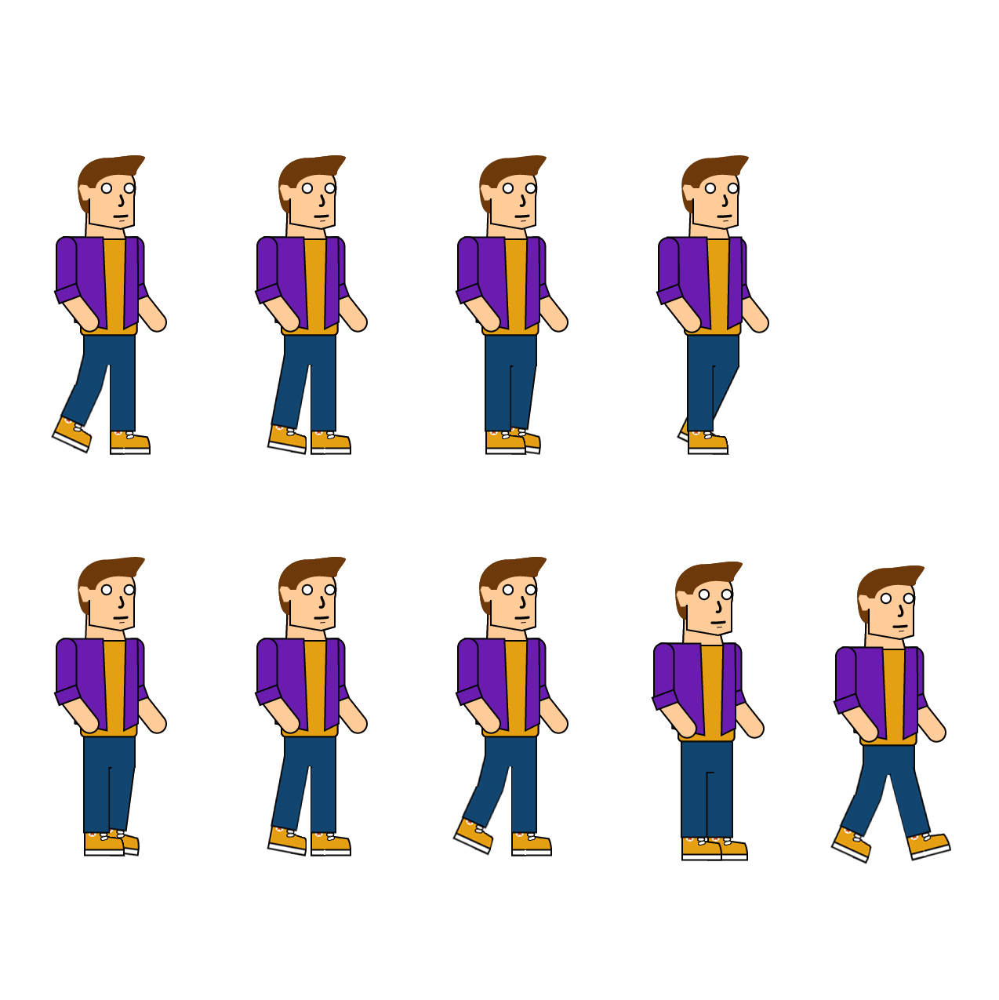
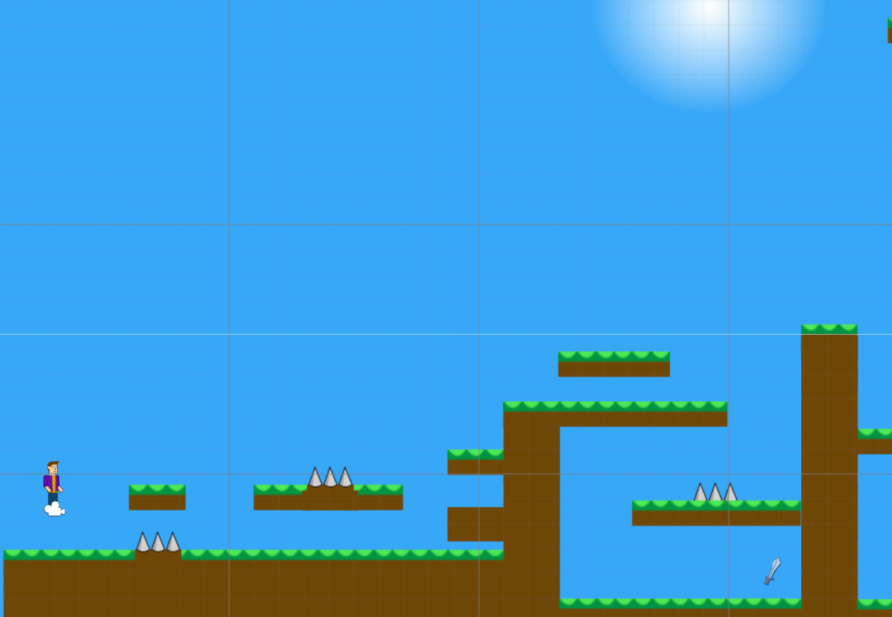

Info about the game
Background
This is the simple background we were having in the game. It would repeat as soon as the sprite went off of the canvas, we did this using a piece of code called tiling.

Platforms
Callum created these platforms using Photoshop, and splitting them up i was abit to copy and paste them into Unity creating our scene.
Sprite Sheet
This is our sprite sheet, from this we were able to make it look as though the character was moving in the game.
This is the final scene.
This is the scene for the game, in this level you will be back in 1066, in the batle of hastings.